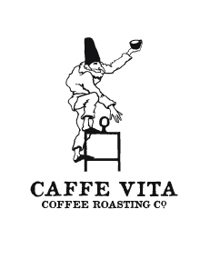

Java Locator allows you to find indpendent coffee shops near you. You can now live free of the big chains. Support local businesses, and enjoy high quality java.
Top 3 shops of the month
 Wayward is a lovely coffee shop with vegitarian and vegan food
Wayward is a lovely coffee shop with vegitarian and vegan food
Broadcast Coffee Not just a great independent coffee shop but they roast and source their own coffee
 Cafe Vita One of the established local roasters with many shops around seattle. They were trail blazers in the small batch roasting revolution.